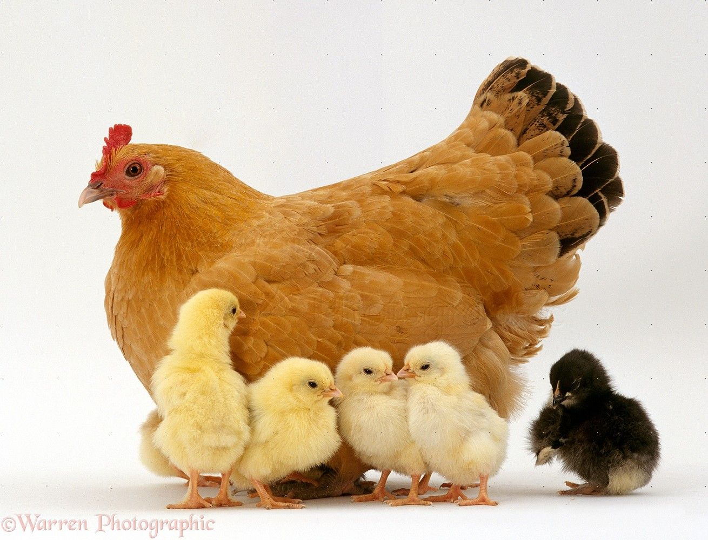
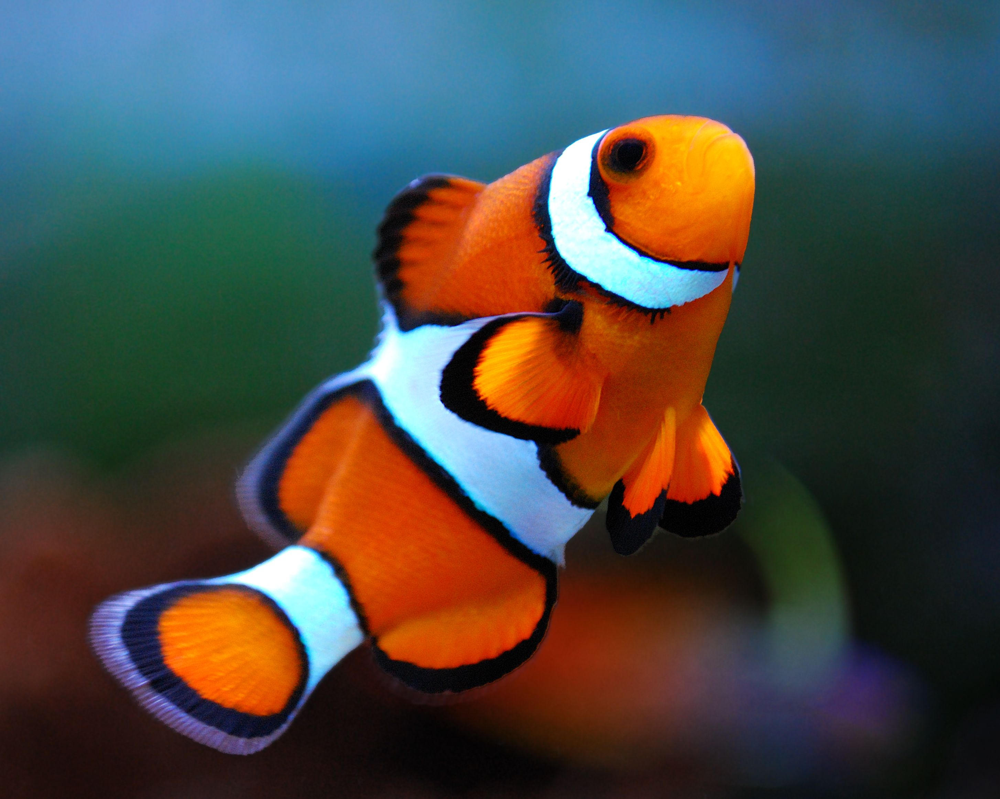
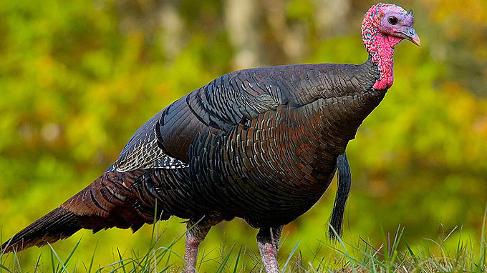

NOT COMPLETE
Return to Menu
Click on the images for more information!
-
Chicken Breast
- High In protein, Mood Boost, Immunity Boost, Bones, Muscle

-
Fish
- Fatty Acids. Vitamins, Minerals, Disease Prevention, Skin

-
Beef
- Protein, Vitamins, Muscle Building, Iron, Creatine

-
Pork
- Protein, Muscle Mass, Minerals, Vitamins, Immunity Boost

-
Turkey
- Protein, Vitamins, Muscle Building, Vitamins, Niacin
